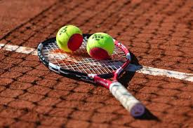

Aqui é onde você encontra todos os ítens mais novos e modernos do seu esporte preferido
"O tênis é um esporte no qual dois jogadores lançam uma bola, usando uma raquete, acima da rede que separa uma quadra. O esporte também pode ser praticado por quatro jogadores, sendo duas duplas. O objetivo do esporte tênis é o jogador rebater a bola com a raquete para o lado do adversário para atingir mais pontos. A prática esportiva exige raciocínio rápido e muita estratégia dos competidores. O termo tênis tem origem na palavra francesa “tenez”, cujo significado é “segure”, imperativo do verbo segurar. Desde o início do esporte, esse verbo era falado pelo jogador que lançava a bola para o outro jogador. Nascido na Europa no século XII e posteriormente propagado em todo o mundo pelos imigrantes europeus, o tênis é hoje um dos esportes mais praticados no planeta e um dos mais populares do Brasil. Além de trabalhar o corpo, o tênis também é um esporte que promove a saúde mental dos seus praticantes. Entre os benefícios que o tênis traz para mente, destacam-se concentração, autoconfiança, disciplina e equilíbrio emocional."